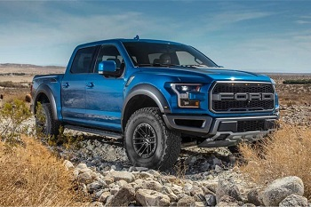
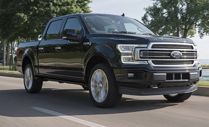
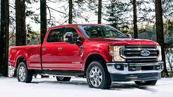
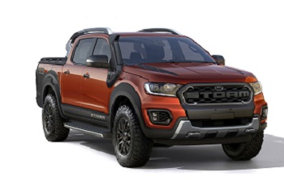
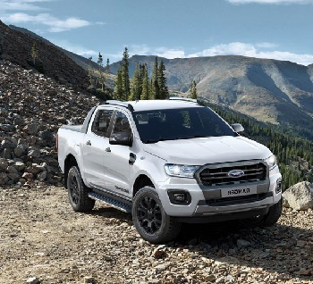

| CAMIONETA | INFORMACION | |
|---|---|---|
|  | Camioneta Pick up Ford Raptor 2020, Precio: $1,485,900 Motor EcoBoost de 450HP, 6 Asientos,510 lb-pie, Transmisión Automática de 10 Velocidades, Amortiguadores de Alto Desempeño Fox Racing, Equipada con Control de Crucero Todo Terreno, Asistencia de Pre-Colisión con Freno de Emergencia Automático, Largo 559 mm, Alto 199 mm, Ancho (sin espejos) 219 mm, Largo de Caja (al suelo) 170 mm, Potencia 450HP, Bastidor de Acero Completamente Enmarcado de Alta Resistencia, FOX Live Valve Racing Shox, Todo terreno de Alta Potencia Torque 510 lb-pie de torque. | |
|  | F-150 King Ranch 2020, precio $52,990, 6 Asientos, Motor Ti-VCT V8 de 5.OL, Sistema de sonido ByO de Bang y Olufsen, Cámara de Marcha Atrás con Asistencia Dinámica de Enganche Abre superposición de imagen para Cámara de Marcha Atrás con Asistencia Dinámica de Enganche, Bolsas de Aire: Tipo Cortina Lateral Safety Canopy, Alarma Antirrobo Perimetral Sistema Remoto de Entrada sin Llave, Largo total 209.3", Altura de la cabina 75.5", Ancho, Sin espejos 79.9", Ancho incluye espejos estándar 96.8", (Sistema Información de Punto Ciego) con Alerta de Tráfico Cruzado y Cobertura de Remolque | |
|  | F-250 2020 Super Duty, 475 caballos de fuerza en su Motor V8 y 1,050 libras pie de torque,está equipada con tecnología de Asistencia de Remolque, Con una capacidad de carga de hasta 1,505 kg y 8,663 kg de poder de arrastre, 0 está equipada con 4 ganchos de sujeción en el área interna de la batea, está equipada con Radio AM/FM/Reloj/CD de 6 bocinas y el sistema de infotenimiento SYNC®3 en su espectacular Pantalla Táctil de 8 pulgadas. Además, cuenta con Applink®, Apple Asistencia de Pre-Colisión con Freno de Emergencia Automático, Largo 6,351, Ancho (sin espejos), 2,031, Ancho (con espejos)2,438, Torque 1,050 lb-pie de torque. | |
|  | Ford Ranger Storm, Precio $798,990, Utiliza un motor diesel de 3.2 litros de 197 hp —la Raptor tiene 213 hp— asociado a una transmisión automática de seis velocidades. Cuenta con tracción integral, control electrónico de estabilidad y asistente de descenso automático de pendientes. monta un 3.2 litros turbodiésel de cinco cilindros, Ancho total sin espejo 1860,Capacidad de carga 1,129Kg, Tanque de gasolina 80L, Incluye una capota marítima, Bolsas de aire (Frontales laterales) de conductor, pasajero y de rodilla para conductor, Frenos ABC con EBD (Distribuccion Electronica con frenado en las Cuatro ruedas, Un interior con acabado oscuro y unos nuevos neumáticos todo terreno con llantas de aleación negras. | |
|  | Pick Up Ford Ranger 2019, Precio $500,990, Trasmicion manual de 5 velocidades, Faros de Niebla, Faros con apagado automatico, Espejos laterales cromados ajustables electricamente, Cuenta con un motor de Gasolina 2.5 Litros I4 Ti-V con 164 caballos de fuerza, 167 lb/pie de Torque y transmisión Manual de cinco velocidades, Tracción 4x4 y una capacidad de carga de hasta 1.238 toneladas, Ganchos de sujesion de carga al interior de -caja Pick Up, Ganchos de sujecion xterior, Control de estabilidad electronico, Volantes con controles de audio y velocidad cruzero, Sensores de reversa, Controles de decenso de pendientes Dimension de largo Total de 5,354, Disponible en Color: Gris Mercurio, Azul oceano, Rojo Meicano, Negro Ocaso, Plata Ostion. | |